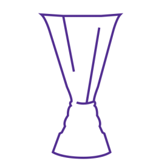
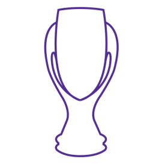

Champion de Belgique
1946/47, 1948/49, 1949/50, 1950/51, 1953/54, 1954/55, 1955/56,1958/59, 1961/62, 1963/64, 1964/65, 1965/66, 1966/67, 1967/68, 1971/72, 1973/74, 1980/81, 1984/85, 1985/86, 1986/87, 1990/91, 1992/93, 1993/94, 1994/95, 1999/00, 2000/01, 2003/04,2005/06, 2006/07, 2009/10, 2011/12, 2012/13, 2013/14, 2016/17
Coupes de Belgique
1965, 1972, 1973, 1975, 1976, 1988, 1989, 1994, 2008
Supercoupes de Belgique
1985, 1987, 1993, 1995, 2000, 2001, 2006, 2007, 2010, 2012,2013, 2014, 2017
Coupes des Vainqueurs de Coupes
1976, 1978
Coupe de l'UEFA
1983
 Supercoupes d'Europe
1976, 1978